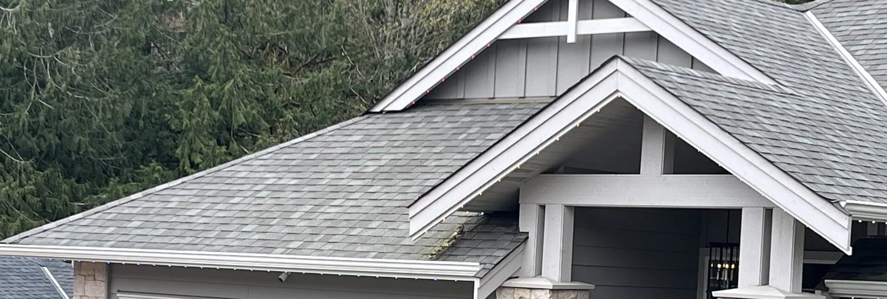
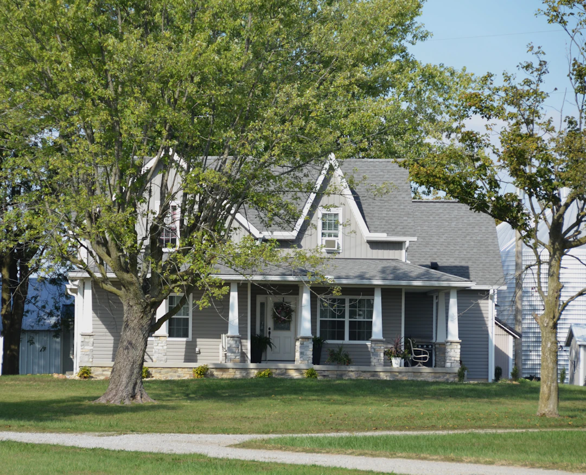

Roof, Gutter & Siding
Comprehensive exterior cleaning to protect your home from moisture damage, moss growth, and premature wear.
Protect Your Home’s Exterior
Vancouver Island’s wet coastal climate is relentless on roofs, gutters, and siding. Moss creeps across shingles, gutters fill with debris, and siding accumulates grime season after season. Left unattended, these issues lead to moisture infiltration, structural damage, and costly repairs.
TVI Home Services offers targeted cleaning for each surface using techniques matched to the material—gentle enough to protect your investment, thorough enough to make a lasting difference.
Three Services, One Call

Roof Moss Removal
Moss holds moisture against your shingles, causing them to lift, crack, and deteriorate. Our removal process clears moss safely without damaging roofing material.
- Prevents moisture damage and shingle lifting
- Restores proper drainage flow
- Extends roof lifespan

Gutter Cleaning
Clogged gutters cause water to overflow into your fascia, soffits, and foundation. We clear all debris and check downspouts for proper flow.
- Prevents foundation and basement water damage
- Eliminates pest nesting habitat
- Recommended annually on Vancouver Island

Siding Soft Wash
High pressure damages vinyl and wood siding. Our soft wash method uses low pressure with specialized biodegradable cleaning solutions for a thorough, safe clean.
- Safe for vinyl, wood, stucco, and Hardie board
- Removes algae, mildew, and rain staining
- Restores curb appeal instantly
Custom Quotes for Every Home
Every roof, gutter system, and siding job is different. We provide free on-site assessments and custom quotes based on your home’s size, condition, and materials.
Request a Free QuoteFrequently Asked Questions
Will moss removal damage my shingles?
No. We use careful techniques to remove moss without lifting or breaking shingles. High-pressure spraying is never used on roofs—we rely on manual removal and targeted treatments.
How often should I clean my roof?
On Vancouver Island, we recommend checking and cleaning your roof every 1–2 years. Homes under trees or on the north-facing side of a hill may need annual attention.
How often should gutters be cleaned?
At least once a year—ideally in late fall after leaves have dropped. Properties surrounded by trees may need twice-annual cleaning to prevent blockages.
Why is moss so common on Vancouver Island?
The combination of mild temperatures, high humidity, and abundant rainfall creates ideal growing conditions for moss. North-facing roofs and shaded areas are especially prone.
Do I need to be home during the service?
Not necessarily. As long as we have access to the areas being cleaned and a water source, we can complete most exterior cleaning while you’re away.
How long does the service take?
It depends on the size and condition of your home. A typical combined roof, gutter, and siding cleaning takes 3–6 hours. We’ll give you a time estimate with your quote.
Why hire professionals instead of DIY?
Working on roofs and ladders is dangerous without proper training and equipment. Professionals also know which cleaning methods are safe for each material, preventing accidental damage that can void warranties.
Protect Your Home from the Top Down
Request a free quote for roof, gutter, and siding cleaning. We keep your home safe from Vancouver Island weather.